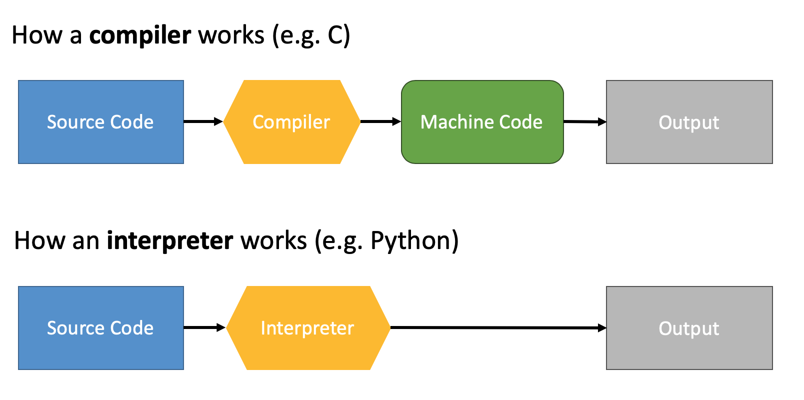

Abstraction in Computer Science¶

Compilation vs. Interpretation¶
{kind=link}
What are the differences between compilers and interpreters in regard to the following aspects?
Execution time (fast - slow)
Degree of abstraction (closer to natural language or machine language)
Syntax (simple - complex)
Typing (dynamic - static)
Memory management (manual - automatic)
Compilation vs. Interpretation¶
Python |
C |
|---|---|
|
|
Practical: Assignment¶
See course webpage for access to the assignment!
We will meet back here at 2 pm.
Help each other, use pair programming.
If you cannot find the answer collect them as an issue on GitHub!
Compilation vs. Interpretation¶
Discuss in groups:
What are the advantages and disadvantages of compiled and interpreted languages?
Summary¶
There is usually a trade off between programming time and execution time.
Programming time is more expensive than execution time. That’s why Python is so popular.
In 99% of the time you don’t need to worry about execution time, because Python optimizes a lot internally.
When you run Python code, a lot of it is actually happening in C.
Be aware of the the trap of premature optimization.
Start simple, optimize only when necessary.
Resources¶
How Python runs <https://indianpythonista.wordpress.com/2018/01/04/how-python-runs/>`_
ogr (and gdal) are swig generated modules for Python. Therefore, the python bindings resemble C and don’t seem pythonic.
Shapely is more written in python, therefore it is slower but seems more pythonic.
but ogr, is less Pythonic
Keep the overhead of creating python or C classes in mind. This might be important when you optimize code!